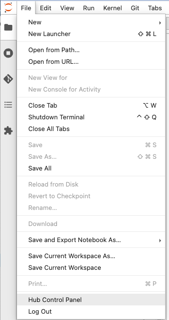
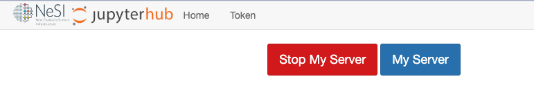

Jupyter on NeSI
Note
This service is available for users with a current allocation on
Mahuika only.
Please Contact our Support Team to request a suitable
allocation.
Introduction¶
NeSI supports the use of Jupyter for interactive computing. Jupyter allows you to create notebooks that contain live code, equations, visualisations and explanatory text. There are many uses for Jupyter, including data cleaning, analytics and visualisation, machine learning, numerical simulation, managing Slurm job submissions and workflows and much more.
See also
- See the RStudio via Jupyter on NeSI page for launching an RStudio instance.
- See the MATLAB via Jupyter on NeSI page for launching MATLAB via Jupyter
- See the Virtual Desktop via Jupyter on NeSI page for launching a virtual desktop via Jupyter.
- See the Jupyter kernels - Tool-assisted management (recommended) and Jupyter kernels - Manual management pages for adding kernels.
Accessing Jupyter on NeSI¶
Jupyter at NeSI is powered by JupyterHub, a multi-user hub that spawns, manages and proxies multiple instances of the single-user Jupyter server.
Access NeSI's JupyterHub here¶
When you log in with your NeSI credentials you will be taken to the "Server Options" page, where typical job configuration options can be selected to allocate the resources that will be used to run Jupyter. Typical jobs, not requesting a GPU, should be up and running within one to two minutes. Requesting a GPU can increase this time significantly as there are only a small number of GPUs available at NeSI.
Tip
If your server appears to not have started within 3 minutes please reload the browser window and check again, otherwise contact Contact our Support Team.
Known issues¶
-
When using srun in a Jupyter terminal you may see messages like those shown below. The "error" messages are actually just warnings and can be ignored; the srun command should still work. Alternatively, you could run unset TMPDIR in the terminal before running srun to avoid these warnings.
srun --pty bashsrun: job 28560743 queued and waiting for resources srun: job 28560743 has been allocated resources slurmstepd: error: Unable to create TMPDIR [/dev/shm/jobs/28560712]: Permission denied slurmstepd: error: Setting TMPDIR to /tmp
Jupyter user interface¶
JupyterLab¶
Once your server has started you will be redirected to JupyterLab. JupyterLab is the next generation of the Jupyter user interface and provides a way to use notebooks, text editor, terminals and custom components together. If you would prefer to use the classic Notebook interface, then select "Launch Classic Notebook" from the JupyterLab Help menu, or change the URL from /lab to /tree once the server is running.
File systems¶
Your Jupyter server will start in a new directory created within your home directory for that specific Jupyter job. Within that directory, you will find symbolic links to your home directory and to the project and nobackup directories of your active projects. We do not recommend that you store files in this initial directory because next time you launch Jupyter you will be starting in a different directory, instead switch to one of your home, project or nobackup directories first.
Jupyter terminal¶
JupyterLab provides a terminal that can be an alternative means of gaining command line access to NeSI systems instead of using an SSH client. Some things to note are:
- when you launch the terminal application some environment modules
are already loaded, so you may want to run
module purge - processes launched directly in the JupyterLab terminal will probably be killed when you Jupyter session times out
Ending your interactive session and logging out¶
To end a JupyterLab session, please select "Hub Control Panel" under the File menu then "Stop My Server". Finally, click on "Log Out".
 
If you click "Log Out" without stopping your server, the server will continue to run until the Slurm job reaches its maximum wall time.
This means that if you wish to have a session lasting, say, 4 hours
(which is not offered in the "Select walltime" drop-down) then you can
start a 8 hour session and end the job as described above when you are
finished. Alternatively, you can cancel your Jupyter job by running
scancel 'job_id' from within the Jupyter terminal when you are done.
Note this will make the page unresponsive as it now has no compute
powering it.
Installing JupyterLab extensions¶
JupyterLab supports many extensions that enhance its functionality. At NeSI we package some extensions into the default JupyterLab environment. Keep reading if you need to install extensions yourself.
Note, there were some changes related to extensions in JupyterLab 3.0 and there are now multiple methods to install extensions. More details about JupyterLab extensions can be found here. Check the extension's documentation to find out the supported installation method for that particular extension.
Installing prebuilt extensions¶
If the extension is packaged as a prebuilt extension (e.g. as a pip package), then you can install it from the JupyterLab terminal by running:
pip install --user <packagename>
For example, the Dask extension can be installed with the following:
pip install --user dask-labextension
Installing source extensions¶
Installing source extensions requires a rebuild of the JupyterLab web application. Since this requires write permissions, you will need to set the JupyterLab application directory to a location that you can write to. To do this you need to create a file named ~/.jupyterlab3_dir in your home directory with the full path to your desired JupyterLab application directory and then run some commands to initialise the JupyterLab application directory.
Running the following commands will create the JupyterLab application directory in your home directory:
module load JupyterLab
echo $HOME/.local/share/jupyter/lab > ~/.jupyterlab3_dir
export JUPYTERLAB_DIR=$HOME/.local/share/jupyter/lab
jupyter lab build
These changes will only take effect after relaunching your Jupyter server and then you should be able to install JupyterLab extensions as you please.
Note
The above commands will put the JupyterLab application directory in your home directory. The application directory often requires at least 1-2GB of disk space and 30,000 inodes (file count), so make sure you have space available in your home directory first (see NeSI File Systems and Quotas) or request a larger quota.
You could change the path to point to a location in your project directory, especially if multiple people on your project will share the same JupyterLab application directory, e.g.:
module load JupyterLab
echo /nesi/project/<project_code>/$USER/jupyter/lab > ~/.jupyterlab_dir
export JUPYTERLAB_DIR=/nesi/project/<project_code>/$USER/jupyter/lab
jupyter lab build
Log files¶
The log file of a Jupyter server session is saved either in the project
directory of the project you selected on the "Server Options" JupyterHub
page, or in your home directory, and is named
.jupyterhub_<username>_<job_id>.log (note the leading . which means
the log file is hidden). If you encounter problems with your Jupyter
session, the contents of this file can be a good first clue to debug the
issue.